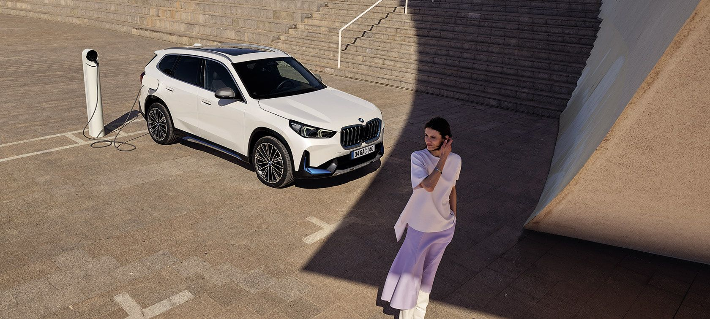

|  | ||||
| Yakıt Tipi | Güç | Menzil | 0-100KM | |
| Tamamen Elektrikli | 313 bg | 417-440 Km | h:5.6 sn | |
YENİ BMW iX1'DE YENİLİK VE KONFOR. Yenilikçi teknolojileri lüks konforla buluşturan yeni BMW iX1'de her detay ihtiyaçlarınızı mükemmel şekilde karşılamak üzere tasarlandı: -Dokunmatik kontrol özellikli BMW Kavisli Ekran aracılığıyla sürücü ve araç arasında ideal iletişim için tam kapsamlı bağlantı -İdeal sürüş konforu için Geri Sürüş Asistanı ve Park Asistanı gibi akıllı sürüş asistan sistemleri -Yeni ‘BMW Türkiye’ mobil uygulaması içerisinde yer alan BMW Şarj Haritası ile tanıştınız mı? BMW Şarj Haritası üzerinde önce rotanızın başlangıç ve bitiş noktalarını belirleyin; yol üzerindeki şarj noktalarını görüntüleyin, size en uygun olanı seçin; güncellenen rotanızı navigasyon uygulamanıza aktarın.